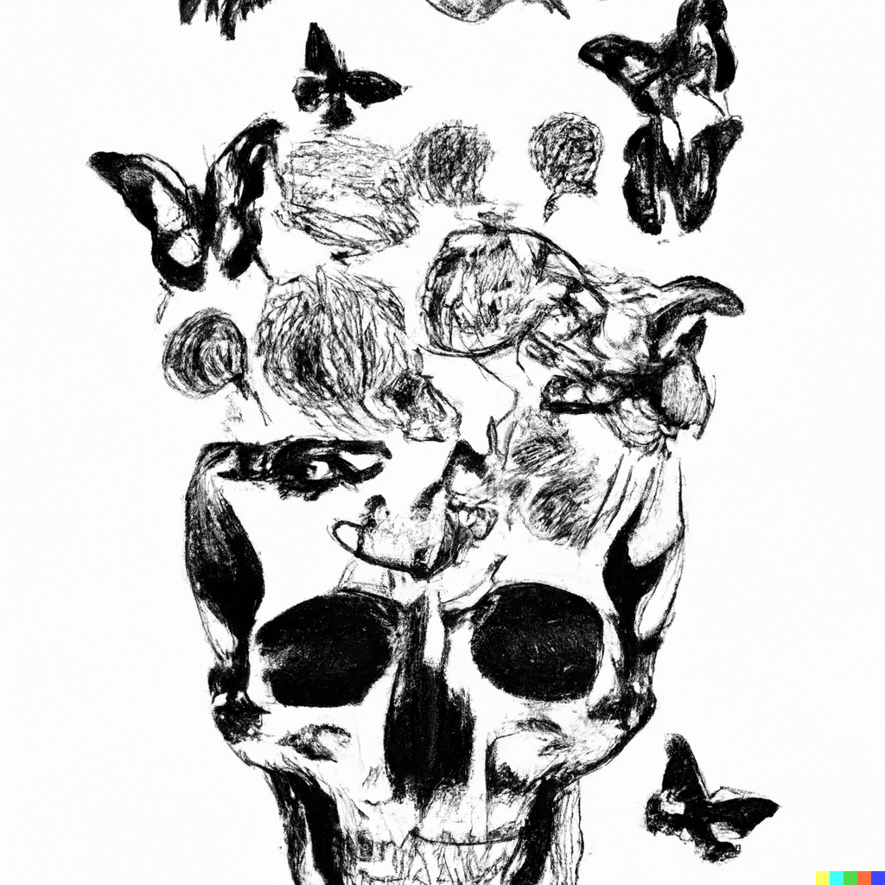
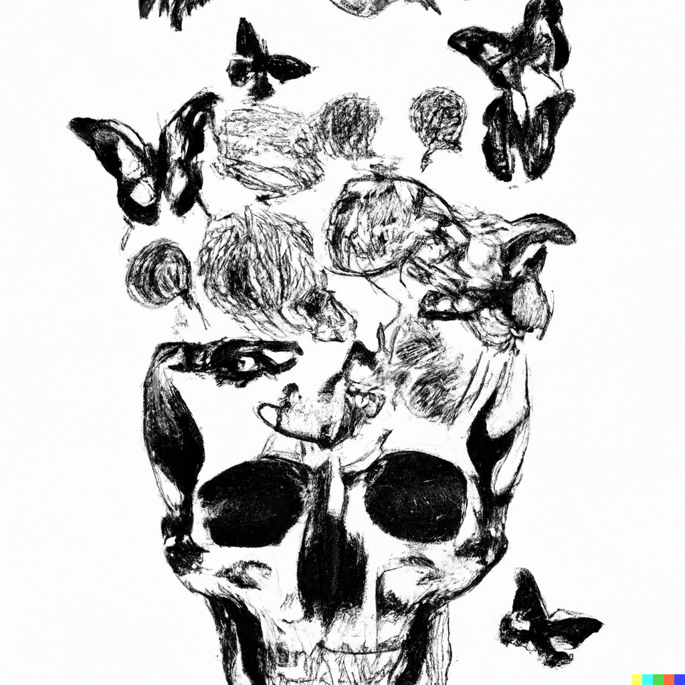

Call to action! It's time!
Sign up for our product by clicking that button right over there!
This website has some subtext that goes under the main title. It's a smaller font and the color is lower contrast.

 

Alone, exploring the world in pursuit of something unknown.
Death comes to us all, but are you prepared for it?
You might feel lonely, but that is not the same thing as being alone. How do you conquer this feeling?
Or maybe you just feel indifferent to the world, and don't care about it. Is that a good thing?
“Of all the footprints, that of the elephant is supreme. Similarly, of all mindfulness meditation, that on death is supreme.”
Sign up for our product by clicking that button right over there!